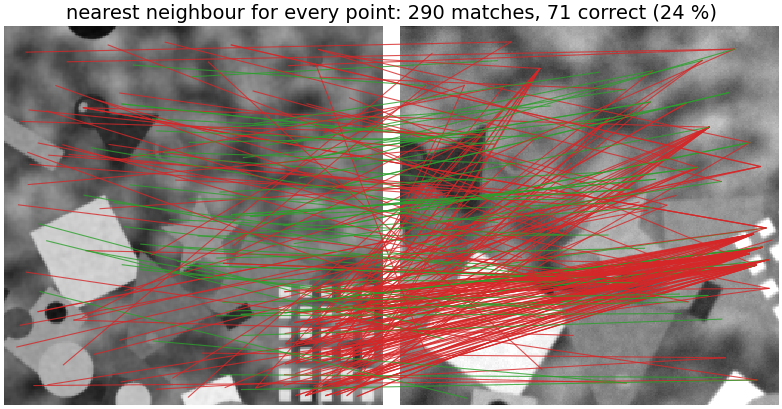
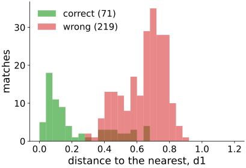
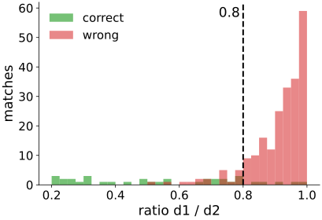
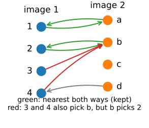
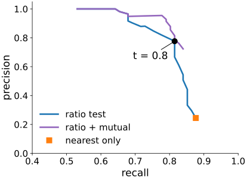
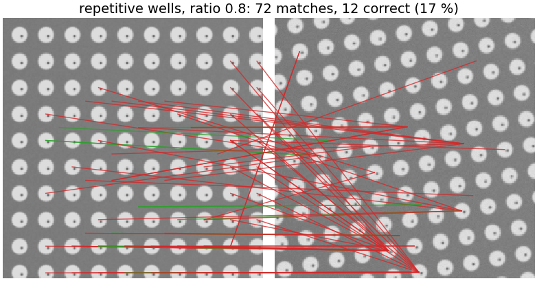
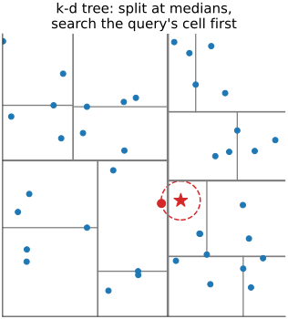
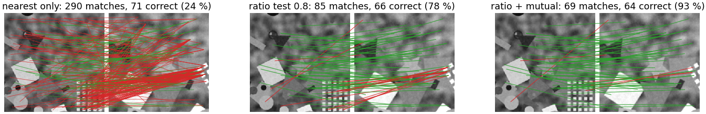

Two images, a few hundred descriptors each. Which descriptor in image 2 belongs to which in image 1?
Slides titled The math give the formulas and proofs; the ideas are complete without them.

For every descriptor of image 1, take the nearest descriptor of image 2.
Accept a match only if its distance d_1 is small?

Compare the best with the second best: accept only if d_1/d_2 < 0.8.

A simple model: the distance to the correct partner comes from a narrow distribution near 0 (“noise”); the distances to the n_2 - 1 wrong descriptors from a broad background distribution, different for every feature.
Accept (i, j) only if j is i’s nearest and i is j’s nearest (a cross-check).

With a known transform (a synthetic second view, or a hand-checked pair):
A stricter ratio: cleaner but fewer matches. Ratio 0.6: 96 % precision, 68 % recall; 0.8: 78 %, 81 %; 0.9: 51 %, 84 %.
The next unit needs enough correct matches with a tolerable fraction of wrong ones, not perfection.


The cure is geometry: the matches must agree on one transform (next unit).
Brute force compares all pairs: n_1 n_2 distances of length 128. For 2000 × 2000: 5 \cdot 10^8 multiply-adds (about a second in a browser, milliseconds on a GPU).


Nearest only → ratio 0.8 → plus mutual: 24 % → 78 % → 93 % correct, while keeping most of the correct matches (71 → 66 → 64).